MonoLyft
A chair that helps people with weak or arthritic knees stand up, using a coil spring instead of a motor. It fits a standard chair frame and needs no electricity.
- Course
- ME1050 Introduction to Engineering Design and Communication, Year 1 Semester 1, SLIIT
- Team
- Group 07, seven first-year engineering students
- My role
- Project lead and concept generation
- Result
- Grade A, report submitted 12 July 2026
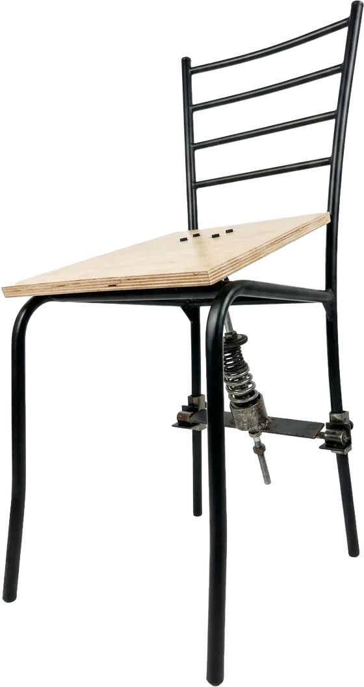
The problem
Standing up from a normal 42–48 cm chair asks a lot of the knees. For someone with arthritis or weak leg muscles it can be painful or impossible. That raises the risk of falls and leaves people relying on family members for everyday help.
Powered lift chairs exist, but they cost upward of LKR 150,000 and need mains electricity, which puts them out of reach for most Sri Lankan households. Our aim was a low-cost mechanical alternative that fits onto an ordinary chair.
We interviewed two elderly people with knee problems. They felt the most pain in the first part of the rise, and sudden, jerky movement made them anxious. So the lift had to be gradual, and it had to assist rather than do all the work.
- Support users up to 80 kg, tested at 150% of the expected load
- Stay stable on slopes up to 20°
- Be learnable by a new user in three attempts or fewer
- Lift smoothly, with no sudden push
How it works
Seated: the spring is compressed and locked.
- Sit down. Your weight compresses the coil spring under the seat.
- Lock. A quick-release clamp lever holds the seat down and keeps the spring’s energy stored.
- Release. Open the lock and the spring lifts the backrest-side edge around the outer-edge hinge, tilting the seat forward to help you stand.
- Sit again. The hinge lowers the seat slowly instead of dropping you.
Choosing a concept
Each team member sketched their own idea, then we compared them as a group. Three survived: a spring-assisted seat, a scissor-lift base and an electric actuator that raises and tilts the seat. We scored them on five weighted criteria: feasibility, engineering depth, impact, innovativeness and team alignment.
The spring won. When we shifted the weights by 10% towards feasibility, which is the actuator’s strongest area, the spring still came first (3.90 against 3.75).
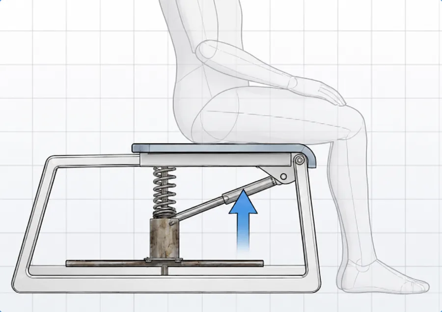
A. Spring-assisted seat Selected
A coil spring stores energy when you sit and releases it as an upward push.
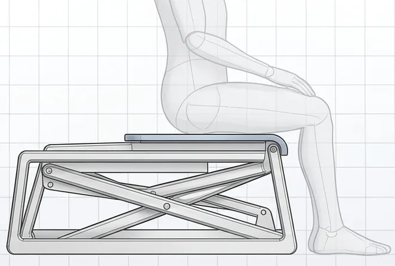
B. Scissor-lift base
Needs too much height to fold under a normal seat, which made the chair bulky and less stable.
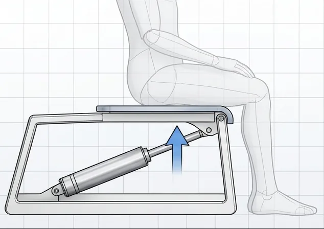
C. Actuator and hinge tilt
Needs a motor, wiring and a power supply, so it costs more and has more that can fail.
Scores are weighted totals out of 5.
Building it
We built the prototype between 12 and 28 June 2026, starting from a scrap steel chair frame. We cut, ground and welded in reinforcements and hinge plates, machined the rods and brackets in the workshop, and used a wire EDM machine to cut precise mounting holes in the brackets. Then we fitted the spring, threaded bars and hex nuts under a wooden seat.
The hard parts were alignment and tuning. Hinges that were slightly out of line made the seat bind, and the spring needed repeated adjustment until it helped without pushing abruptly.
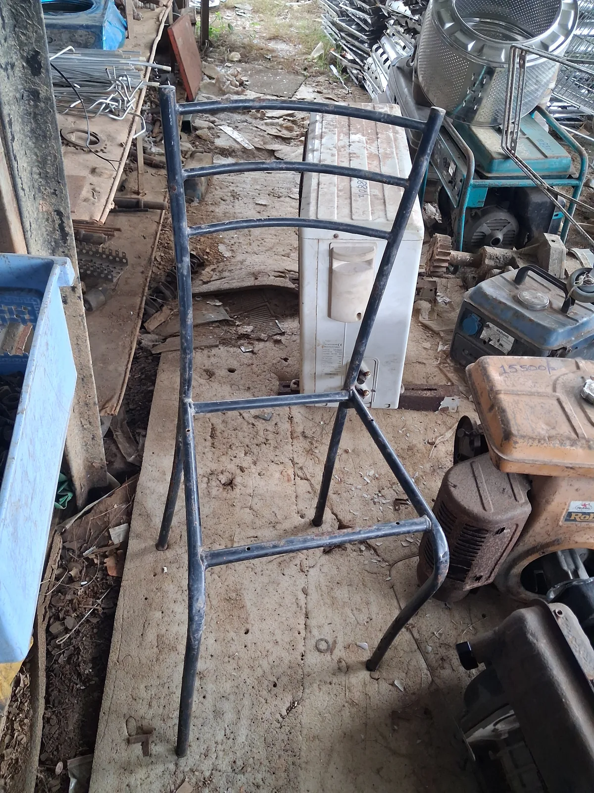
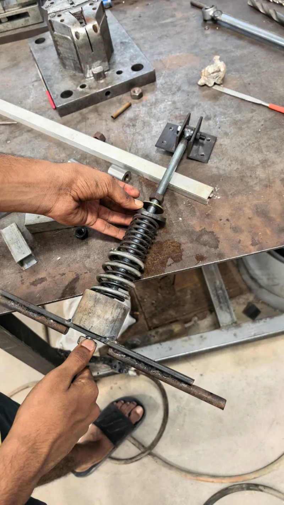
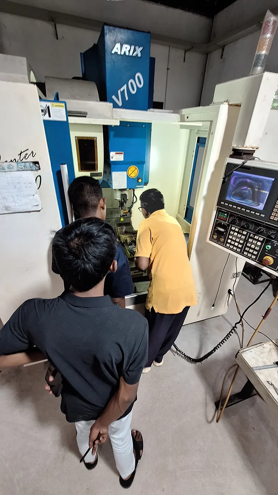
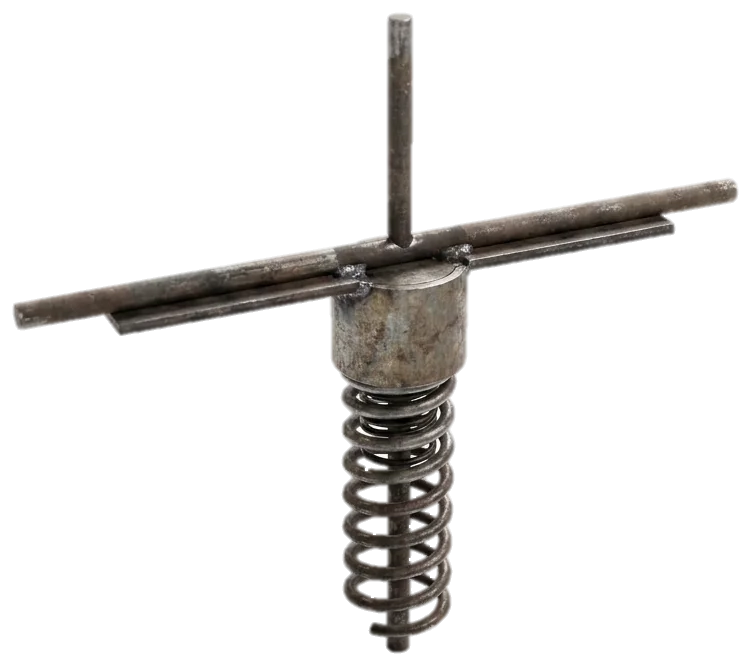
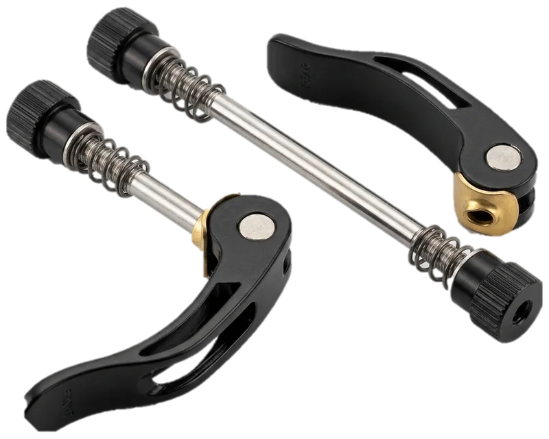
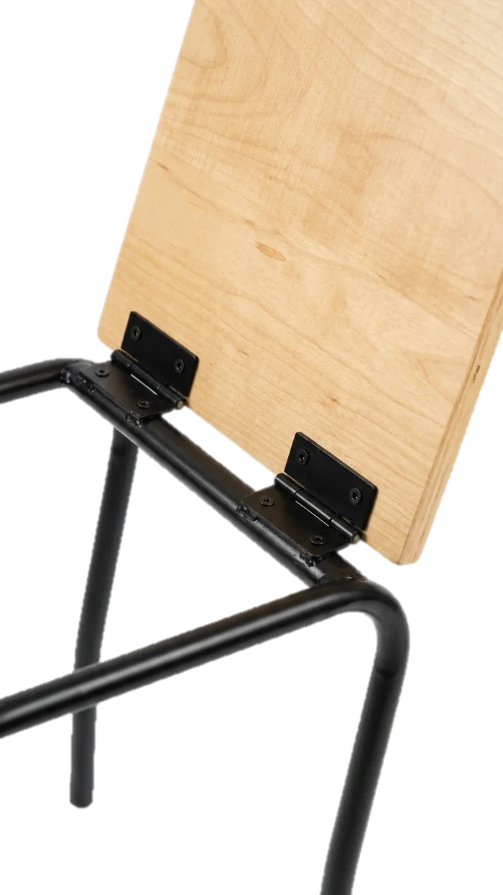
Test results
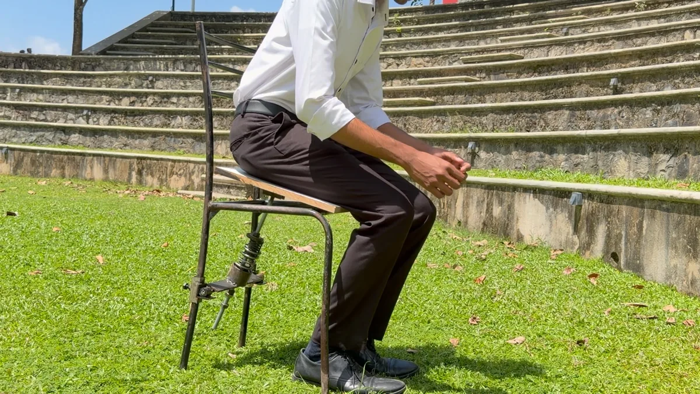
| Test | Target | Measured | Result |
|---|---|---|---|
| Load | Stable structure at 150% of expected load | Stable under load | Pass |
| Slope stability | Stable up to 20° | Stable up to 24° | Pass |
| Learning time | Fewer than 3 attempts | 2 attempts on average | Pass |
| User trial | Successful operation | 7 of 7 participants | Pass |
LKR 4,575
Total cost including workshop rent and transport. Materials alone came to LKR 2,075, and most parts were second-hand or from local hardware shops. A powered lift chair starts at LKR 150,000.
7 of 7
trial participants used it successfully. They were general participants, not the elderly users it is designed for, and the prototype hasn’t been certified to a formal safety standard. It is a working prototype, not a finished product.
Next steps and lessons
What we would improve
- Adjustable spring. The current spring gives one fixed level of help. An adjustable one could be tuned to each user’s weight.
- Test with elderly users. A larger group from the real target audience.
- Lighter frame. Aluminium instead of mild steel, so the chair is easier to move.
- Better ergonomics. More padding and lumbar support.
- Safety certification. A necessary step before any commercial release.
What I took from it
- Simple can beat clever. The spring beat the motorised concept on safety and ease of use, even though the actuator looked more advanced on paper.
- Sourcing is engineering. Buying parts on price alone, without checking their rated specification, delayed our assembly.
- Shared tools settle arguments. The weighted decision matrix turned “which one should we build?” into a discussion about evidence.
The team
- Nimsandu Kottage Project lead and concept generation
- S.A.S. Vismini Report writing and documentation
- K.M.G.Y. Thilakarathna Material sourcing and assembly
- P.H. Handaragama Prototype fabrication
- J.L.I. Udana Report writing and documentation
- M.G.K. Yehan Testing and validation
- A. Dissanayake Cost analysis and documentation
Supervised by Kumara Jayawickrama.